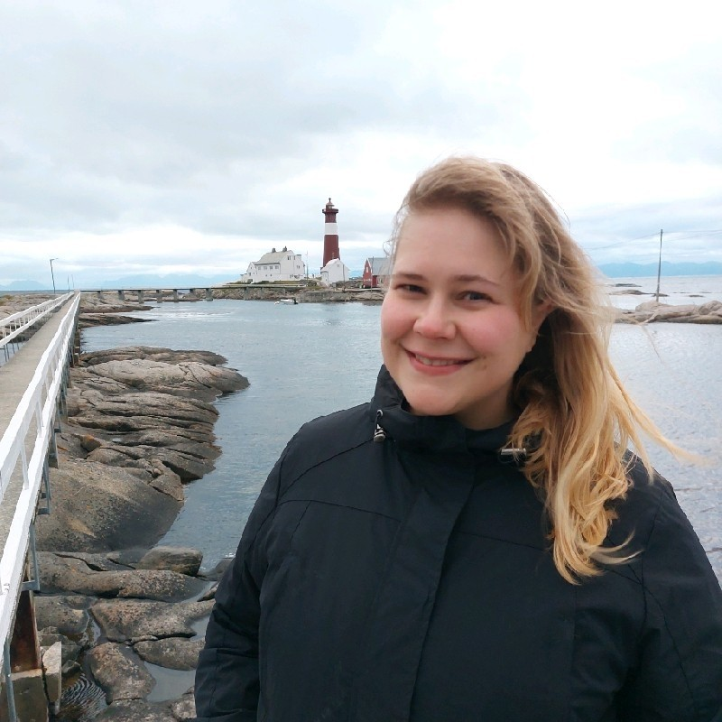

Charlotte Elsbak is Sales and Marketing Manager at Lofoten Seaweed, a seaweed start-up in Norway which hand-harvests seaweeds to create products ranging from seaweed sprinkles to seaweed-infused gin.
The team supplies seaweed and kelp to Michelin restaurants and Bocuse d’Or finalists, and collaborates with award winning and innovative food producers. Their products can be found on the shelves of 130 stores nationally and internationally.
In this edited conversation with Peter Green, Charlotte spoke about Lofoten Seaweed and future perspectives on the seaweed industry.

How was Lofoten Seaweed created?
Angelita and Tamara are the founders. They are both physiotherapists who met during their studies in Australia. During her time working with high-performance athletes, Angelita was always looking for alternative and healthy food sources. After some research, it became apparent that the wild-growing seaweed near her cabin in the north of Norway was full of nutrition. At that point she asked Tamara, who is half-Japanese and grew up eating seaweed, for her opinion.
They decided to continue their assessment of the seaweed by asking Tamara's mother to join them up north. The next step involved plenty of additional research, testing, assessing, and evaluating in order to determine the nutritional qualities of the seaweed.
After this investigation, sustainable harvesting of the seaweed became the next priority. They decided to settle on hand-harvesting, a practice which involves cutting just above the reproductive organ of the seaweed. Interestingly, the seaweed responds to this by producing even more seaweed! Our harvesting and monitoring technique is important becuase it means we are ecologically certified by the government.

How did you personally get involved in this team?
The team has seen significant growth these past years and now they want to work more internationally. I've been working internationally for the past 10 years so I applied for the job as sales and marketing manager earlier this year. I grew up close to Lofoten and I really loved the idea of being involved with a sustainable food resource. It’s great product for vegans and vegetarians because it’s healthy, full of nutrition and also has a beautiful flavour profile.
What’s the demand like for your product?
We do get a lot of interest thanks, in part, to the fact our product can be used for literally anything. We have been involved in producing chocolates from seaweed, pasta, cheese, sausages, cosmetics and even gin! It's a very versatile product. Getting people more interested in using seaweed in their diet is part of our mission. So not only do we have our specific products, but we also sell to restaurants.

What challenges have you encountered?
With our stronger brand comes a few challenges. For example, we need to be more mindful that we don't compromise the brand by collaborating with enterprises who don’t align with our sustainability and environmental values.
In addition, our focus on sustainability, hand-harvesting and quality gives rise to generally higher prices which makes it more difficult on the international stage.
Then there’s the question of changing people’s attitudes to seaweed. It’s interesting because a lot of people consider eating seaweed to be quite a new trend. It’s a false belief because even the Vikings used to eat it! We are trying to overcome this by creating a three course meal in Lofoten where we have seaweed on every single plate.
In terms of challenges with the product itself, iodine content is an interesting problem. In general, people have too little iodine in their food. On the other hand, seaweed has quite a lot of iodine in it, to the extent that it might be too much if you have too much dried seaweed.
What’s next for you internationally and locally?
We’ve been working a lot on strategy and getting certain contracts and practical parts in place.
When it comes to the markets, we've added a new distribution centre in Denmark to hopefully decrease some of the costs incurred with shipping and VAT for Europe. Norway is not part of the EU so it’s previously been quite expensive to ship to Europe.
We might create a line of cheaper sprinkles so that we can distribute to more people across the globe. This might involve changing the packaging and pursuing a few changes so that becomes more accessible to people.
We’re now working with one of the biggest gift-shop companies in Norway which is great. We've seen that our products align well with other companies. There are several reasons for this; for example, most Norwegian companies these days want to be more eco-friendly and locally sustainable.
Where do you see the general seaweed industry going?
Hopefully we will see seaweed as a natural part of an everyday diet. We also want seaweed to be easy for people to use. It shouldn't be something restricted to professional chefs only. That’s why we made seaweed sprinkles!
What advice might you give to your younger self or someone starting on this journey of aquaculture and sustainability focussed climate businesses?
Creating a business does not have to be only about profit or sustainability. You can do both, and you should do both. Businesses have so much influence and therefore we are so happy to see more and more businesses taking responsibility and becoming more sustainable. We are so proud if we are able to influence other new start ups to think about the future of our health and our planets health. Also, being a women lead start-up, we want to tell young entrepreneurs that they can do it, regardless of gender. Starting a business is always tough, and you have new challenges along the way that you couldn’t foresee. However, perseverance and believing in yourself, as well as having an amazing network and locals (which we did, and wouldn’t be where we are today if it was not for them) is key. You need people around you that believes in you to get you trough the toughest days. For there will be plenty of them! Nevertheless, the endless evening work and long days are all worth it if you do something you believe in and that makes a positive impact on our climate, our health and our beautiful and important oceans.
Are there any books you've found useful- either bio related or personal books which have helped you the most on your journey in this space?
There are a lot of great books out there for start-ups. I recently read DO/BUILD/ How to make and lead a business the world needs. By Alan Moore. A wonderful book about giving back to the people who helped you in the beginning, your community, as well as how to create a business that positively impacts the environment and health of our planet. A great book for inspiration and best practices. However, the most important influence is the people around you. Tamaras mother, for instance, is Japanese and flew all the way to Northern Norway from New Zealand to help Angelita and Tamara with identifying the species with best flavours and nutritional values and showed them how to use it in food. When harvesting seaweed by hand, you still normally would want a boat to get you to the deserted areas where the seaweed is as clean and nutritious as possible. Also, wet seaweed is about 10 times heavier than our dried products, so we need about 100 kilos to have 10 kilos in dried form. That means we need a crane to lift the fresh seaweed from the boat to the facility where it gets dried. Having buildings to dry and store the dried products are also necessary, and the dried seaweed needs to be milled down to flaks for our sprinkles. As you can imagine, these machines and facilities would cost a lot more than two physiotherapists trying to run a start-up could afford. Luckily our wonderful locals in the fishing village of Napp, has stepped up and offered their help and equipment. Without them, Lofoten Seaweed would probably never have gotten where we are today.